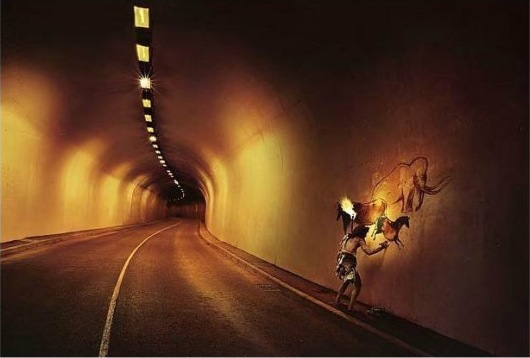
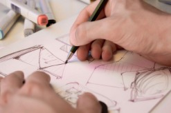
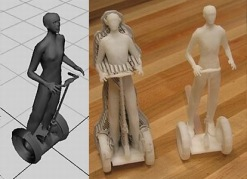

|
Volkan Yýldýrým Önder
Makine Mühendisi
www.volkanonder.blogcu.com
Yaþadýðýmýz müddetçe geliþen ve ilerleyen teknolojinin de etkisiyle insanoðlu olarak ihtiyaçlarýmýz hiç bitmez ve kendimizi sürekli bir alýþveriþ koþuþturmasý içinde buluveririz. Fakat satýn aldýðýmýz ürünün nasýl bir aþamadan geçtiðini hiç düþünmeyiz. Aldýðýmýz ürünü kullanmaya baþlayýnca ya durumdan hoþnut kalýp ne kadar iyi bir ürün aldýðýmýz için kendimizle gurur duyar ya da memnuniyetsizliðimizi dile getirip satýcýyý veya üreteni suçlarýz. Bu düþüncelerin yanýnda ödediðimiz maddi bedelde tabi ki önemli bir noktadýr. Ürünün verilen ücreti hak etmesini isteriz her zaman. Üretici açýsýndan önemli olan ise müþterilerinin hem iþlevsellik hem de maddiyat olarak beklentilerinin saðlanmasý ve rekabet ortamý içinde ürünün sürekli geliþim göstermesidir. Þimdi size fikirden tasarlanan bir ürünün süreçlerini anlatacaðým;

Fikir aþamasý
Bir projenin baþlangýcý fikirdir. Baþlangýç olarak firma içinden veya dýþýndan piyasada olan veya müþterilerin ihtiyaç duyabileceði ürünlerle ilgili fikirler ortaya çýkar. Bu fikirler müþteriden, tedarikçiden ve firma bünyesinde çalýþan her kademedeki kiþiden gelebilir. Ortaya atýlan fikrin yazýlý hale getirilmiþ þekline Proje Teklifi denir.
Araþtýrma aþamasý
Proje teklifleri firmanýn üst kurulu tarafýndan deðerlendirilir. Kurul onayýndan geçen projeler için çalýþmalar baþlar. Seçilen projelerin fizibilite çalýþmalarý yapýlýr. Fizibilite çalýþmalarýnýn tamamlanmasý ve üst yönetime sunulmasýndan sonra ürün yatýrým planýna alýnýr. Yatýrým planýna alýnan fikir artýk resmen bir proje olmuþtur. Projeden sorumlu olmasý için bir proje yöneticisi atanýr. Projenin düzgün bir seyri olmasý için baþlangýç ve bitiþ tarihi belirlenir. Bundan sonra projenin sahibi proje yöneticisidir. Projenin tüm sorumluluðu da proje yöneticisine aittir.
Ar-Ge departmanýnda ürünün teknik özelikleri için gerekli araþtýrma baþlatýlýr. Ürün için gerekli standartlar, þartnameler, piyasa araþtýrmasý raporlarý, müþteri beklentileri, rakip ürünler, patentler vb birçok bilgi incelenir araþtýrýlýr ve tasarým için gerekli kriterler oluþturulur.
Tasarým girdilerinin oluþturulmasý
Tasarým aþamasýnda olan ürünün firma dahilinde üretiminde ve pazarlamasýnda görev alacak kiþilerinde katýldýðý Tasarým Girdileri toplantýsý yapýlýr. Tasarýmýn tamamlanýp ürün halini aldýðýnda sahip olmasý gereken tüm teknik ve mali özelikler belirlenir.
Bu özellikler oluþturulurken ürünün müþterisi gibi düþünülmeye çalýþýlýr. Amaç en ucuz yada en pahalý ürünü üretmek deðil; Fiyat- Performans olarak en iyi ürünü müþteriye sunmaktýr..
Tasarým
Ürünün tasarýmý için ürünün yazýlý DNA'sý olarak adlandýrabileceðimiz tasarým girdileri tasarýmcýnýn kýlavuzudur. Tasarým girdilerinin oluþturduðu sýnýrlarýn içi tasarýmcýnýn hayal gücü ve kalitesiyle doldurulur. Tasarýmcý ürüne hem müþteri hem üretici gözüyle bakar ve memnuniyeti herkes için en üst seviyede tutacak kararlar verir. Her çizgi, her eðim, her dokunuþ bir karardýr. Tasarým aþamasý sürecin en çok karar verilen aþamasýdýr. Tasarým ekibinin deneyim ve yetkinliði ürünün kimliðini ve performansý en üst seviyede etkiler.
Mühendislik Analizler
Prototip yapýmýna baþlanmadan önce tasarýmýn mühendislik olarak doðrulanmasý için mühendislik hesaplarý yapýlmalýdýr. Mühendislik bölümümün ihtiyaç duyduðu BDA (Bilgisayar Destekli Analiz) yöntemleriyle tasarým kontrol edilir. Tasarýmcýyý yönlendirebilecek kadar deneyimli bir mühendislik ekibi ürünü beklentilerin üstüne taþýyabilir.
Prototipler ve testler
Prototip yapýmýnda 3D-Printer olarak bilinen teknolojiyi kullanabiliriz. Plastik veya metal malzemeden CAD datasýný kullanarak gerçeðe yakýn prototipler oluþturabiliriz. 3D-Printer teknolojisi ile prototip üretimini ve test sürecini minimuma indirebiliriz.
Prototipler karar verilen tasarýmlara göre hazýrlanýr. Prototipler üzerinde son incelemeler ve testler yapýldýktan sonra Analiz sonuçlarý ve Tasarým girdileri göz önünde bulundurularak ihtiyaç duyulan düzeltmeler yapýlýr.
Tasarým gözden geçirme
Proje yöneticisi idaresinde tasarýmcý, üretimci ve ürünün pazarlamasýný yapacak kiþiler tasarýmlarýn incelenmesi ve gerekli düzeltmelerin yapýlmasý için bir araya gelir. Tasarým gözden geçirmeler tasarým sürecince periyodik olarak yapýlýr.
Tasarýmýn kabulü
Prototip ve testlerinin sonuçlanmasýyla tasarým son þeklini alýr. Tasarým Kabulü toplantýsý yapýlarak ürünün üretime geçirilebilmesi için ilk adým atýlýr. Bu aþamada tasarým tescili ve patent baþvurularý yapýlarak tasarým ve ürün kanuni olarak koruma altýna alýnýr.
Ürün için gerekli üretim ekipmanlarýnýn temini
Bu aþama projenin en heyecanlý ve zor kýsmýdýr. Firmanýn tüm çalýþanlarýnýn yeni bir ürün için tek yumruk haline geldiði günleridir. Kalýplar tasarlanýr ve üretilir. Dýþarýdan tedarik edilecek parçalar için tedarikçilerle görüþülür ve sipariþler açýlýr. Ürünün montajýnda kullanýlacak aparatlar, test cihazlarý vb tüm ekipmanlar için hummalý bir çalýþma baþlar.
Ön seri üretim ve saha testleri
Seri üretim öncesinde ürünün üretim süreçlerinin kontrol aþamasýdýr. Üretimdeki sorunlar tespit edilir. Kalite belgelendirmesi için gerekli baþvurular yapýlýr çýkan ürünler saha testine gönderilir ve izlenir. Bu aþamada da gerekli kontroller ve düzeltmeler yapýlýr.
Seri üretim
Seri üretime onay toplantýsýndan sonra seri üretim baþlar ve ürün paketlenerek müþteriye ulaþtýrýlýr. Fikir olarak baþlayan proje artýk müþterisiyle buluþmuþtur. Tüm çalýþanlar fikrin ürüne dönüþmesinin haklý gururunu yaþar.
Ürün-Geliþtirme
Ürün geliþtirme aþamasý Seri üretim onayýndan sonra baþlar. Ürünün sonsuz olan iyileþtirme süreci baþlamýþtýr. Bir ürünü aldýðýnýzda artýk onun baþýndan geçenleri biliyorsunuz. Ürün aslýnda bir fikrin somutlaþmýþ halidir.
Not: Fikirlerimle ilgili fikirleriniz benim için deðerlidir. |